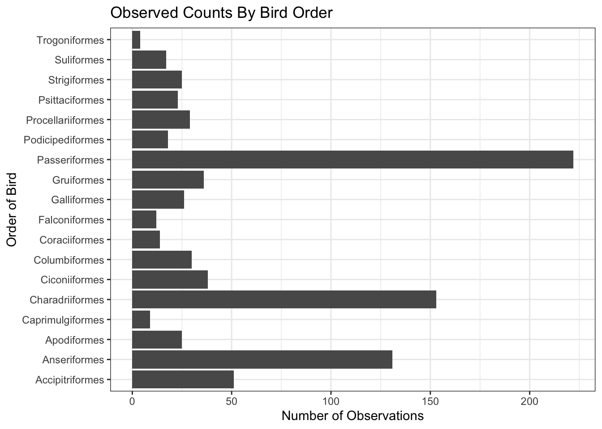
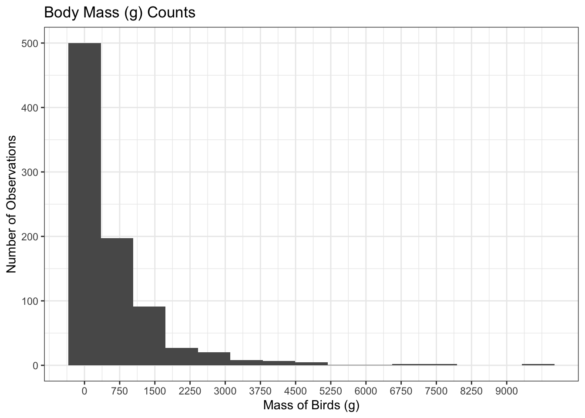
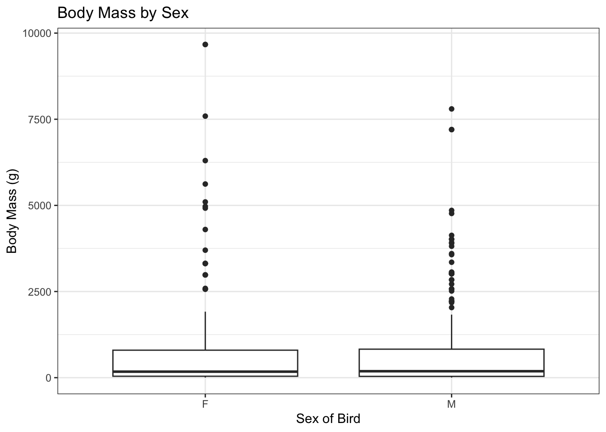

Tidyverse and GGplot Guide
1 Study Introduction
The dataset used in this guide comes from the published study Skeletal Correlates for Body Mass Estimation in Modern and Fossil Flying Birds by Daniel J. Field, Colton Lynner, Cheryl Brown, and Simon A. F. Darroch, published in PLoS One in 2013. Their purpose was to examine how skeletal size relates to body mass in certain birds. They measured various bone lengths in hundreds of birds to determine which bones best predict the species and size of the bird they came from. This type of data is useful because body mass is an important distinguishing trait, and the relationship between mass and bone size can also help scientists estimate the mass of extinct birds whose only remains are skeletons. This guide will explore obtaining data from a published article, cleaning data using the tidyverse package, and plotting the data to identify similarities and differences among different bird species.
1.1 Obtaining Data
Before we can work with the data to determine important differences between the bird species, we must first collect the data into a readable format.
Find and Create the CSV:
Find the article at: https://journals.plos.org/plosone/article?id=10.1371/journal.pone.0082000
Scroll down to “Supporting Information” and click on Table S1. This will download a CSV of the data
Rename and save the CSV, then move it into the same folder as your project
1.2 Starting Tidyverse and Data Cleaning
Now that we have access to the data in a readable form, we must put it into a dataframe so that we can easily clean and re-organize the data to our liking.
Start Tidyverse:
- Install and load the
tidyversepackage intoRso that we can access its funcitons
- Read the CSV file into a tibble dataframe to manipulate later
Cleaning the Data:
We will rename the columns to not have
" "s so that they are easier to call later onLuckily the researchers didn’t record bad data with “
NA”s in it, but generally we should remove themWe will remove all other columns that won’t be needed for our purposes
We will use the
|>operator to pass the previous item in as the first argument of the next call to save time
Code
dat.Birds.cleaned = dat.Birds |> ## Reset dat.Birds to clean version and pass it through
rename_with(~ gsub(" ", ".", .x)) |> ## Replacing " " with "."
rename(mass_g = 'mass.(g)') |> ## Making a cleaner name
rename(femur_circ = 'femur_circumference.(mm)') |>
rename(order = Order) |>
mutate(sex = case_when(
sex == "m" ~ "M",
sex == "f" ~ "F",
TRUE ~ sex)) |> ## Make the inputs consistant
select(order, species, sex, femur_circ, mass_g) |> ## Keeping relevant columns only
drop_na() ## Removing all rows with NA's1.3 Creating Plots with ggplot2
Now we will use ggplot2 to create visualizations of the data to understand their shape and structure. We will need to pull certain variables and pick the correct graph depending on the type of data we use. Data Types and Graphs:
- Categorical data : Bar plot (geom_bar())
- total birds observed in each order
- Quantitative (single variable) : Histogram (geom_histogram())
- distribution of bird’s body mass
- Quantitative vs Categorical : Boxplot (geom_boxplot())
- body mass of female vs. male birds
- Quantitative vs Quantitative : Scatterplot (geom_point())
- femur size vs. body mass
Creating Plots:
We will create one plot for each type listed above:
1. BAR PLOT:
Code

2. HISTOGRAM:
Code
hist = ggplot(dat.Birds.cleaned, aes(x = mass_g)) +
geom_histogram(bins = 15) +
scale_x_continuous(breaks = seq(0,
max(dat.Birds.cleaned$mass_g, na.rm = TRUE), by = 750)) + ## Set the tick marks for the x-axis
theme_bw() +
labs(
x = "Mass of Birds (g)",
y = "Number of Observations",
title = "Body Mass (g) Counts")
hist
3. BOX PLOT:
Code

4. SCATTERPLOT:
2 Main Takeaways
This guide uses the tidyverse and ggplot2 packages to import, clean, and visualize real data. We used tidyverse to properly read a dataset into a tibble and clean data to create a readable and useable dataframe. We then used different types of plots in ggplot2, specifically bar plots, histograms, boxplots, and scatterplots to show categorical and quantitative data in representative ways.